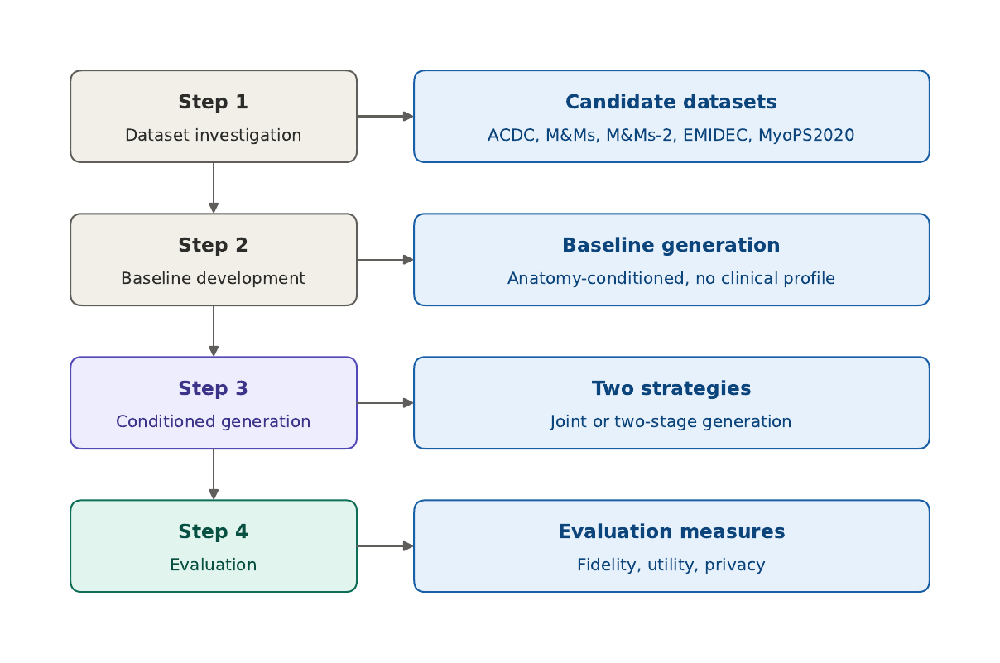
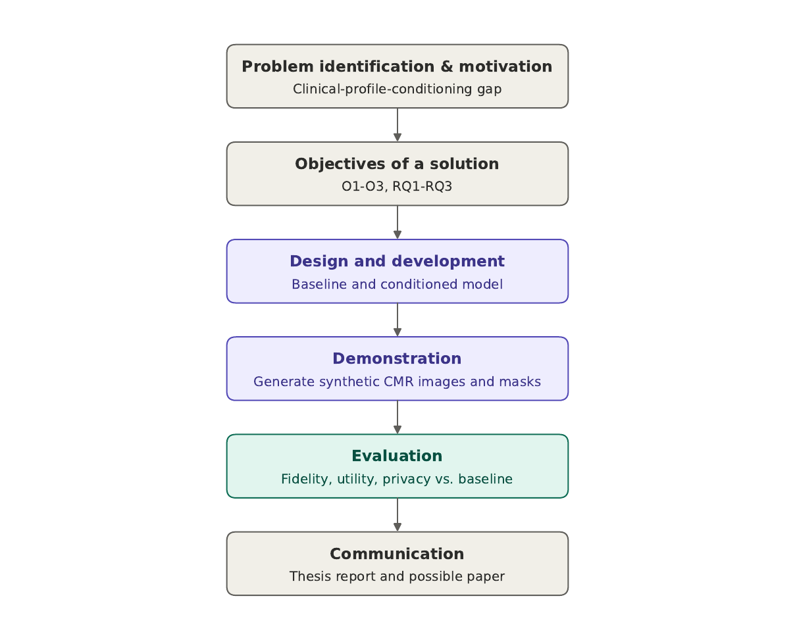
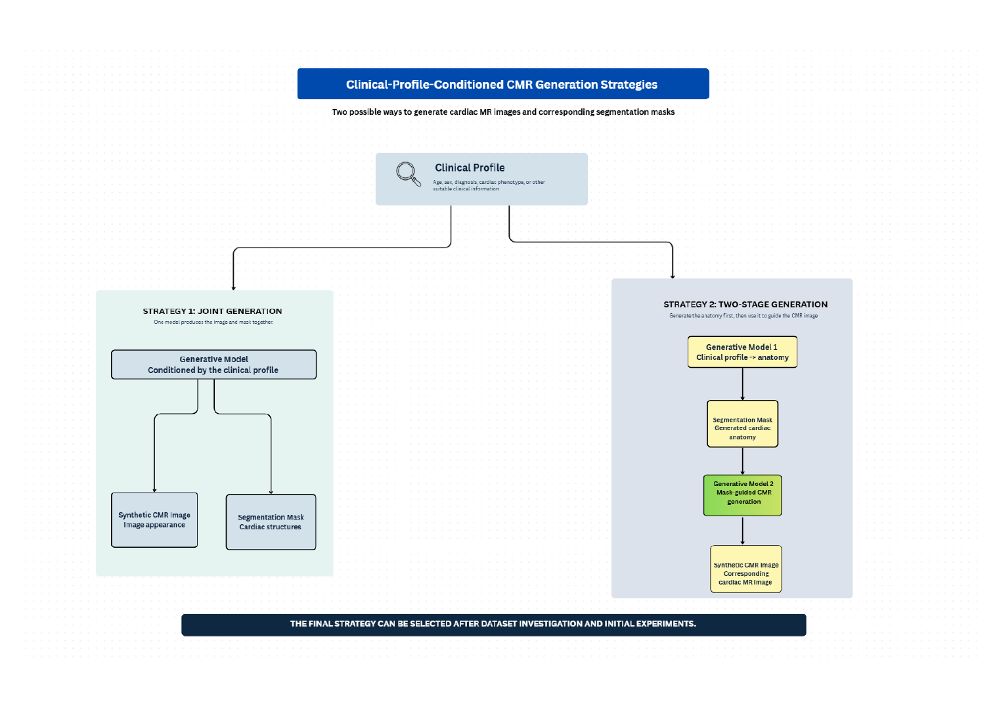
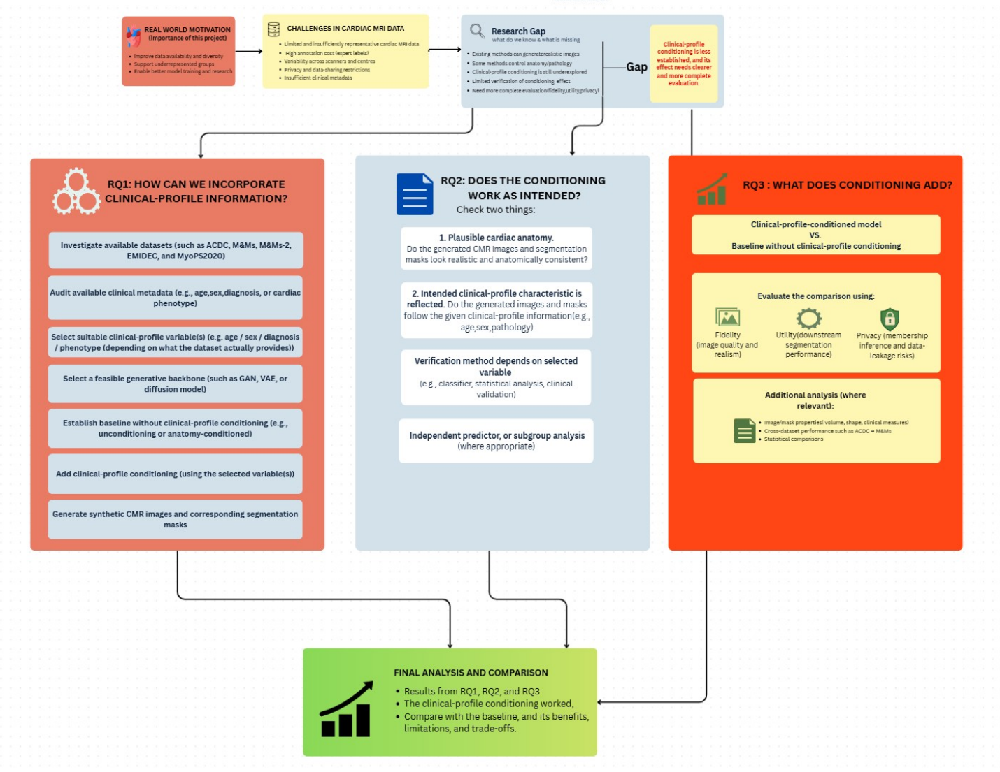

Master's Thesis · AI Research in Healthcare · Medical Imaging · 2026 · Work In Progress
Clinical-Profile-Conditioned Synthetic Cardiac MRI Generation Using Deep Generative Models
Generating synthetic cardiac MR images that are guided by a patient's clinical profile, with a two-stage pipeline: clinical features and noise make a mask, and the mask makes the image. A GAN and a diffusion-style flow matching model are compared for the image stage.
Cardiac MRIACDCM&MsConditional VAESPADE GANFlow matchingClinical features
Deep learning for cardiac MRI needs a lot of labelled data, but scans are scarce, differ between scanners and are protected by privacy rules. Generative models can create extra synthetic scans. Most existing work controls only the anatomy of the generated heart, for example with a segmentation mask. This project asks whether the generation can instead be controlled by information about the patient, so that synthetic data can be shaped towards the patient groups a dataset is missing.
The approach is a two-stage pipeline. In stage 1, 14 clinical features (height, weight, chamber volumes, ejection fractions and volume ratios) and random noise are turned into a synthetic segmentation mask by a conditional VAE. In stage 2, that mask and noise are turned into a synthetic cardiac MR image, and two model families are compared: a SPADE GAN (the baseline) and a flow matching model. The results are checked for image fidelity and for whether the clinical features really steer the output. Utility for downstream models and privacy tests follow. The first results are on ACDC, with 85 training and 15 validation patients, and the test sets are kept untouched until the end.
2 stagesmask generation, then image generation
2 image modelsSPADE GAN and flow matching
3 checksfidelity, conditioning, then utility and privacy
1 frameworksame split and metrics for every model
Deep learning models for cardiac MRI need a lot of labelled data, and that data is hard to get. Scans differ between scanners and hospitals, expert labelling is slow, and privacy rules limit sharing. Some patient groups and conditions also appear only a handful of times.
Generative models can create extra synthetic scans. Most existing work controls the anatomy of the generated heart, for example with a segmentation mask. This project asks what happens when the generation is controlled by information about the patient, such as diagnosis group, body measurements or other clinical details, so the synthetic data can be shaped towards the groups a dataset is missing.
Scope. This is a methods and data project. It does not involve clinicians, patient outcomes or clinical deployment, and it makes no claim about clinical impact.
02
Objectives, research questions and answers
Main objective. Investigate how clinical-profile information can give fine-grained control over the generation of synthetic cardiac MR images together with their segmentation masks.
O1 / RQ1 Build it
Develop a baseline generative model without clinical-profile conditioning, and a conditioned version built on top of it. How can the profile be put into the model?
O2 / RQ2 Check it works
Do the generated images and masks keep plausible anatomy, and do they actually reflect the profile they were conditioned on?
O3 / RQ3 Compare it
How does the conditioned model compare with the baseline on fidelity, downstream utility and privacy?
Where each research question stands
Main objective. Investigate how clinical-profile information can give fine-grained control over the generation of synthetic cardiac MR images together with their segmentation masks.
Research question
Status
What answers it so far
RQ1.1 What clinical information is available and suitable for conditioning?
Answered
Both datasets audited. ACDC has diagnosis, height and weight; M&Ms adds age and sex. The 14 classification features, calculated from the masks, were chosen as the condition (The 14 features).
RQ1.2 How can it be incorporated into generating images and masks?
First version built
A two-stage pipeline: features and noise make a mask (conditional VAE), and the mask makes the image (GAN or flow matching). Run end to end: FID 119.8.
RQ2.1 Do the generated images and masks keep plausible anatomy?
Measured
Anatomy checks (one region per class, LV present, myocardium wraps the LV, RV touches the heart): 54% of conditioned masks pass; with a generation-time filter that redraws failing masks, 100% pass. The checks cover structure only, not clinical realism.
RQ2.2 Do they reflect the clinical profile used for conditioning?
Measured
Matched against shuffled features: LV volume and the ratios follow the request, ejection fraction only weakly (see Results).
RQ3.1 Effect of conditioning on fidelity and anatomical consistency, against a baseline without it
Measured (one run)
A baseline mask model without the profile was trained with the same recipe. The profile improves how well masks follow the real slices (LV r 0.64 vs 0.08) and patient LV volume (r 0.95 vs 0.45), and lowers FID from 124.3 to 119.8. Still open: repeat runs and the test sets.
RQ3.2 Effect on downstream utility
Planned
Segmentation or classification trained on real, synthetic and combined data.
RQ3.3 Effect on privacy
Planned
Nearest-neighbour distance and membership-inference tests.
What did the proposal ask?
Can a patient's clinical profile give fine-grained control over synthetic cardiac MR images and their masks, and is the result faithful, useful and private? The proposal splits this into three objectives (build, check, compare) with seven sub-questions.
What is the short answer so far?
Build: yes, a two-stage pipeline works end to end (14 features and noise, then a mask, then an image). Check: the profile does steer the masks (matched features beat shuffled ones), but ejection fraction is only weakly controlled and some masks fail. Compare: flow matching is clearly better than the GAN for the image stage (FID 189 to 119). The comparison with a baseline without clinical conditioning, utility and privacy are still to do.
03
Approach
The work follows Design Science Research. A baseline pipeline is built first, then the clinical-profile-conditioned approach is added on top of it, so any difference can be traced to the conditioning itself.

The four steps of the pipeline, with what each one involves.

The six Design Science Research activities, mapped onto the thesis.
Two ways to generate image and mask

Strategy 1 generates the image and mask together in one step. Strategy 2 generates the mask first and uses it to guide the image. The final choice depends on the dataset investigation and early experiments.
Step-by-step experimental flow. Green: built. Orange: in progress. Grey: planned. Red: untouched until the final stage. Click the image to open it full size.
Step 1 turns the 14 features and noise into a synthetic mask. Step 2 turns that mask and noise into a synthetic CMR image. The tags show what is real patient data and what is generated. Click the image to open it full size.
How the results are judged
Did the conditioning work? Measure the generated masks and images and compare with the values requested.
Fidelity. How close the synthetic images are to real ones (for example FID, KID, SSIM, LPIPS).
Utility. Train segmentation models on real, synthetic and combined data and test them on the same real data, including across datasets.
Privacy. Nearest-neighbour distance and membership-inference tests.

Overall research workflow: from motivation and gap, through the three research questions, to the final analysis and comparison.
04
System pipeline: generation architecture
Phase 1 generates a synthetic mask and image from a clinical profile; phase 2 evaluates them. Choose a view below.
Choose a view. Every real input is tagged REAL and everything generated by a model is tagged SYNTHETIC.
Stage 2, flow matching: a velocity U-Net gets the noisy image, with the mask and the time added in every block, and predicts the direction from noise to image. 50 steps at generation.
The two steps joined: features and noise to a synthetic mask, then mask and noise to a synthetic image (flow matching shown).
U-Net with residual and attention blocks, 24.7M, mask injected in every block
Training
hinge loss + 10× feature matching + 10× L1, 150 epochs
flow matching regression, 16,000 steps, 10% mask dropout, EMA 0.999
Generation
one forward pass
50 steps, guidance scale 2
FID / KID (real masks)
189.5 / 0.122
118.8 / 0.040
Evaluation plan
Measured
Image fidelity
FID and KID between synthetic and real validation images, with a floor (real against real).
Measured
Did the conditioning work?
Volumes, ejection fraction and ratios are measured on the generated masks and compared with the requested values, against a shuffled-feature control.
Planned
Utility
Train segmentation or classification models on real, synthetic and combined data, and test on real data, including M&Ms.
Planned
Privacy
Nearest-neighbour distance to the training images and membership-inference tests.
05
Data
A conditioned model can only use the patient information a dataset actually carries, and that varies a lot.
Dataset
Images
Size
Groups
Clinical information
Fit and decision
ACDC 2017
Cine SSFP short axis, 1.5T and 3T, one centre (Dijon)
150 patients; 100 labelled training patients audited and preprocessed (1,902 slices)
NOR, MINF, DCM, HCM, RV (20 each in the 100 labelled)
Diagnosis group, height, weight, ED and ES frame. No age or sex (confirmed on the downloaded data).
Main dataset. Balanced, with a strong diagnosis signal. Height and weight differ little between groups.
M&Ms 2020
Cine short axis, 4 vendors, 6 hospitals, 3 countries
375 reported; 345 cases with masks in the downloaded release, all preprocessed (7,908 slices)
NOR 89, DCM 97, HCM 85, HHD 24, ARV 15, IHD 5, AHS 3, LVNC 2, Other 25
Pathology, vendor, centre, age, sex, weight. Height missing for 61% of cases.
External test set. Shares only DCM, HCM, normal and weight with ACDC. DCM is milder than in ACDC, so results are also reported by measured EF.
M&Ms-2 2021
Cine, short and long axis, 3 vendors
360 studies
Right-ventricle focus
To confirm
Extra external test. Not used (time and compute).
EMIDEC 2020
Delayed-enhancement MRI
150 exams
Normal vs myocardial infarction
Sex, age, smoking, hypertension, diabetes, troponin, ejection fraction and more
Richest profile, but binary diagnosis and a different image type. Not used in the current scope.
MyoPS 2020
bSSFP, LGE, T2
45 cases
Patients with myocardial scar
None found
Small and homogeneous. Dropped.
UK Biobank ongoing
Cine, several views
Tens of thousands
Population cohort
Age, sex, BMI, hospital records
Best for age, sex and BMI conditioning, but needs approval. Future extension.
The full notes, including what is confirmed and what still needs checking on the downloaded data, are in the dataset summary. The repository includes a script that audits the real data once it is downloaded. ACDC and M&Ms have both been audited (next two sections).
ACDC auditwhat the downloaded data shows
The audit script was run on the 100 labelled ACDC training patients. The table gives group means computed from the manual masks. Only these summary numbers are shown here, never patient-level data.
What was confirmed
100 patients, 20 in each of five groups, no missing values
Clinical information is limited to diagnosis group, height and weight. BMI and body surface area are derived from the last two.
Age and sex are not in the dataset
What it means for the thesis
Diagnosis group is the strong signal. Height and weight differ little between groups, so their effect will be hard to detect.
Volumes and ejection fraction measured on generated masks give a direct check of whether the conditioning worked.
Group
Patients
Height (cm)
Weight (kg)
LV end-diastolic volume (mL)
LV EF (%)
RV end-diastolic volume (mL)
RV EF (%)
Myocardial mass (g)
DCM
20
171.1
75.5
284.5
18.4
178.1
31.8
170.2
HCM
20
169.8
80.4
129.1
67.4
118.3
59.9
177.1
MINF
20
172.2
74.2
172.2
31.0
119.1
55.5
123.0
NOR
20
172.3
77.9
130.1
60.4
153.2
55.1
102.4
RV
20
168.9
66.9
107.1
54.7
196.3
31.4
77.2
The pattern matches the diagnoses: a large, weakly contracting left ventricle in DCM, a thick myocardium with high EF in HCM, and a large right ventricle with low RV EF in the RV group. This also confirms that the masks and the script work as intended.
M&Ms auditwhat the metadata shows
The audit script was run on the metadata file of the public M&Ms release (345 cases). This section covers the clinical information. The images and masks were processed afterwards (next section).
What was confirmed
Age and sex are present for every case (211 male, 134 female, ages 15 to 90). Weight is missing for 2 cases.
Height is missing for 210 of 345 cases (61%). It is absent for every Philips and GE case, so it is usable only for Siemens and Canon.
Each vendor comes from specific centres: Siemens centre 1, Philips centres 2 and 3, GE centre 4, Canon centre 5.
What it means for the thesis
ACDC and M&Ms share diagnosis (DCM, HCM, normal) and weight. Age and sex exist only in M&Ms, so a model trained on ACDC cannot use them, and the ACDC to M&Ms test rests on diagnosis.
ACDC's MINF and RV groups have no direct match in M&Ms. The closest labels are IHD (5 cases) and ARV (15 cases), which are not the same conditions.
Diagnosis and scanner are tangled together: for example, 19 of 24 HHD cases are GE and no DCM case is GE. Results should be reported per vendor.
For 26 GE cases the end-systolic frame is recorded as 0, which looks like a missing value and needs checking on the images.
Diagnosis
Cases
Mean age
Female / male
DCM
97
44.8
33 / 64
NOR (normal)
89
48.5
45 / 44
HCM
85
60.8
28 / 57
Other
25
51.0
9 / 16
HHD
24
65.2
10 / 14
ARV
15
64.9
8 / 7
IHD
5
67.8
0 / 5
AHS
3
38.0
0 / 3
LVNC
2
39.5
1 / 1
Vendor
Centre
Cases
Height available
Philips
2, 3
125
0
Siemens
1
95
85
GE
4
75
0
Canon
5
50
50
Mean age differs a lot between diagnoses (about 45 for DCM, about 61 for HCM), so age and diagnosis cannot be separated cleanly in this dataset.
Preprocessed datawhat the model sees (128 × 128, 1.5 mm, patient-level split)
Both datasets were converted into the same format so that a model trained on ACDC can be tested on M&Ms: 2D short-axis slices at the end-diastolic (ED) and end-systolic (ES) frames, resampled to 1.5 mm pixels, cropped to 128×128 around the heart, with intensity normalised per volume. Splits are made by patient, never by slice.
ACDC (training and testing)
100 patients, 1,902 slices
Per diagnosis group, from 22 Oct: 17 patients for training and 3 for validation (85 and 15 in total). The original ACDC test set stays untouched until the final stage. The earlier split (14 / 2 / 4) was used for the first results below.
No mask touches the image border after cropping
M&Ms (external test)
345 cases, 7,908 slices, all kept for external testing
Labels converted to the ACDC convention and checked on the images and on chamber volumes
Slice order made consistent in all 345 cases (checked: base first in 100%, against 99% in ACDC)
Schematic drawn for this page, not real data. Colours: blue right ventricle, olive myocardium, red left ventricle. Click the image to open it full size.
Real example slices from ACDC (Bernard et al., 2018): one patient per diagnosis group (DCM, HCM, MINF, NOR, RV), end-diastole (ED, top) and end-systole (ES, bottom). Patient identifiers removed. Overlay: blue right ventricle, olive myocardium, red left ventricle.
Real example slices from M&Ms (Campello et al., 2021), labelled by diagnosis and scanner vendor, ED (top) and ES (bottom). Case identifiers removed. Same colour overlay as above.
Only these few small example slices are shown, with credit to the dataset authors. The datasets themselves are not redistributed. Datasets: ACDC (Bernard et al., 2018) and M&Ms (Campello et al., 2021).
A caution for the external test. The same diagnosis label means different severity in the two datasets. The mean LV ejection fraction of the DCM group is 18% in ACDC but 48% in M&Ms, with a wide spread (5% to 85%). Results on M&Ms will therefore also be reported by measured ejection fraction, not only by diagnosis.
06
The 14 clinical features
The condition for the whole pipeline: how each feature is calculated from a mask, and why it describes the diagnosis.
Equations and worked examplesheight, weight, volumes, ejection fractions, ratios
The mask model is controlled by 14 numbers that describe the heart. They are the features used to classify the five ACDC diagnoses in the challenge paper by Wolterink et al., which is why they carry the diagnosis information. Twelve of the 14 are calculated from a segmentation mask. Only height and weight come from the patient file. This section explains each one from the beginning.
Step 1: from a mask to a volume
A mask labels every pixel as background, right ventricle (RV), myocardium (MYO) or left ventricle (LV). The heart is scanned as a stack of 2D slices, so a volume is the number of pixels with a given label, added up over all slices, times the volume of one voxel (one pixel times the slice thickness).
Vkph = Nkph × Δx × Δy × Δz ÷ 1000
k is the structure: LV, RV or MYO. ph is the phase: ED (end-diastole, the heart is full) or ES (end-systole, the heart has squeezed).
Nkph is the number of pixels labelled k, summed over all slices of that phase.
Δx and Δy are the pixel size, 1.5 mm after preprocessing. Δz is the slice thickness in mm (it differs between patients, for example 10 mm).
Dividing by 1000 converts mm³ to mL.
Worked example (round numbers, not a real patient). If 1,200 pixels carry the LV label over all ED slices, and the slice thickness is 10 mm, one voxel is 1.5 × 1.5 × 10 = 22.5 mm³. The LV volume is 1,200 × 22.5 = 27,000 mm³ = 27 mL.
Step 2: the 14 features
#
Feature
Equation
In words
1
Height
H (cm)
From the patient file.
2
Weight
W (kg)
From the patient file.
3
LV volume at ED
VLVED
Blood volume of the left ventricle when it is fullest.
4
RV volume at ED
VRVED
Blood volume of the right ventricle when it is fullest.
5
Myocardium volume at ED
VMYOED
Volume of the heart muscle around the left ventricle at ED. It grows when the wall is thick.
6
LV volume at ES
VLVES
Left-ventricle volume after the contraction.
7
RV volume at ES
VRVES
Right-ventricle volume after the contraction.
8
Myocardium volume at ES
VMYOES
Muscle volume after the contraction.
9
LV ejection fraction
EFLV = 100 × (VLVED − VLVES) ÷ VLVED
The percentage of the LV blood that is pumped out in one beat.
10
RV ejection fraction
EFRV = 100 × (VRVED − VRVES) ÷ VRVED
The same for the right ventricle.
11
RV/LV ratio at ED
RRV/LVED = VRVED ÷ VLVED
How large the right ventricle is compared with the left one when full.
12
RV/LV ratio at ES
RRV/LVES = VRVES ÷ VLVES
The same after the contraction.
13
MYO/LV ratio at ED
RMYO/LVED = VMYOED ÷ VLVED
How thick the muscle is compared with the blood volume it surrounds.
14
MYO/LV ratio at ES
RMYO/LVES = VMYOES ÷ VLVES
The same after the contraction.
Worked example for the ejection fraction. If the LV volume is 150 mL at ED and 60 mL at ES, then EF = 100 × (150 − 60) ÷ 150 = 60%. A weak, dilated heart might go from 285 mL to 233 mL, which gives EF = 100 × 52 ÷ 285 = 18%.
Why these features describe the diagnosis
DCM (dilated): a very large LV volume and a low EF.
HCM (thick muscle): a small LV, a high EF and a high MYO/LV ratio.
MINF (after infarction): a reduced EF with a moderately enlarged LV.
NOR (normal): values in the middle.
RV (abnormal right ventricle): a high RV/LV ratio.
The group means in the ACDC audit and in First results show exactly this pattern. The features were checked against the earlier audit values: the correlation is 0.999 or higher and the mean difference is under 1 mL.
Limits to keep in mind
The volumes use the pixel size after resampling to 1.5 mm and the slice thickness from the scan header. Gaps between slices are not modelled.
Features 3 to 14 come from the masks, so they describe the heart's size and function, not its texture or the scanner.
Wall thickness, shape and radiomics features, which some other papers use, are not among these 14.
Feature set: Wolterink et al., Automatic Segmentation and Disease Classification Using Cardiac Cine MR Images (arXiv 1708.01141), as used in the ACDC challenge (Bernard et al., 2018).
07
Models and synthetic samples
Stage 1
Conditional VAE (mask)
Turns the 14 clinical features, the slice position, the phase and noise into a synthetic segmentation mask. About 2.2 million parameters.
A diffusion-style model: a U-Net follows a learned direction from noise to image in 50 steps, with the mask given to every layer. Sharper and more varied images.
One validation patient per diagnosis group (DCM, HCM, MINF, NOR, RV), middle slice at end-diastole, chosen by a fixed rule and not by quality. Rows: real mask; synthetic image from the real mask; synthetic mask from the 14 features; synthetic image from that synthetic mask; real image. The failures in DCM and HCM are the masks, and the images follow them. Click the image to open it full size.
08
Results and findings
Results and comparison
All numbers are on the 15 validation patients (254 slices) and come from single runs. The original test sets are not used. ↑/↓ marks the better direction, and the best value in each comparison is highlighted.
Image fidelity (lower is better ↓)
Image model
Masks given
FID ↓
KID ↓
SPADE GAN (baseline)
real
189.5
0.122 ± 0.007
SPADE GAN (baseline)
generated from the 14 features
200.4 ± 0.8
0.135 ± 0.002
Flow matching
real
118.8
0.040 ± 0.005
Flow matching
generated from the 14 features
118.9
0.038 ± 0.004
Floor: real train vs real validation images
–
99.0
0.005 ± 0.002
Do the clinical features steer the masks?
Per-slice area, correlation with the real slice ↑
RV
Myocardium
LV
Matched features
0.31
0.52
0.67
Shuffled features (control)
0.01
0.13
0.46
FINDING 1
Fidelity
Flow matching lowers FID from 189.5 to 118.8 and KID from 0.122 to 0.040 with real masks. It is about 20 FID points above the real-against-real floor, against about 90 for the GAN.
FINDING 2
Conditioning
Swapping the features between patients lowers the agreement for every structure, so the profile steers the masks. LV volume and the two ratios follow the request well. Ejection fraction is only weakly controlled (correlation 0.26).
FINDING 3
Cost of generated masks
With the GAN, generated masks cost about 11 FID points compared with real masks. With flow matching the difference is negligible (one set of generated masks).
FINDING 4
Complete two-step generator
Run end to end from the 14 features and noise, with no real mask or image, it scores FID 119.8 ± 2.6 and KID 0.038, the same as flow matching with real masks. The same profile with different noise gives different hearts. Failed masks still pass their errors on to the image.
FINDING 5
The profile matters
A mask model without the clinical profile gives masks that barely follow the real slices (LV r 0.08) and lowers image quality (FID 124.3 vs 119.8). With the profile: LV r 0.64, patient LV volume r 0.95. Ejection fraction stays weak in both.
FINDING 6
Broken masks can be filtered
Only 54% of conditioned masks pass the anatomy checks. Redrawing failing masks lifts that to 100% and keeps the profile effect.
OPEN
Limits and next steps
Without the filter, about half of the generated masks fail the anatomy checks and the images follow them. One training run on 15 patients, and memorisation is not checked yet. Utility and privacy tests are still to do.
The complete two-step generator
Step 1 (conditional VAE) and step 2 (flow matching) joined in one generator: the 14 features, the slice position, the phase and noise go in, a synthetic mask and a synthetic image come out. No real mask or image is used. Scores on the 15 validation patients (254 slices), 3 noise seeds:
Features of five validation patients (one per group): synthetic mask (top) and synthetic image (bottom). Several masks are broken (DCM, HCM, MINF), and the image follows them.
RQ3.1: a baseline without the clinical profile, and the anatomy filter
The same mask model was trained a second time with the 14 features switched off (it knows only the slice position and the phase). An anatomy filter redraws a failing mask with new noise (up to 20 tries) until it passes the checks. Both generators, with and without the filter, then fed the same flow-matching model. 15 validation patients, mean over 3 noise seeds. r = correlation with the real validation data.
Mask generator
Passes anatomy checks
RV area r
MYO area r
LV area r
LV volume r (patient)
FID ↓
KID ↓
Baseline (no profile)
34.5%
0.07
0.09
0.08
0.45
124.3
0.045
Baseline + filter
100%
0.09
0.13
0.08
0.53
119.4
0.041
Conditioned (14 features)
53.8%
0.23
0.51
0.64
0.95
119.8
0.037
Conditioned + filter
100%
0.30
0.50
0.63
0.95
117.4
0.036
The profile matters. Without it the masks barely follow the real slices (LV r 0.08). With it LV r is 0.64 and the patient LV volume follows the real one (r 0.95). The baseline reaches 0.45 on volume only because the number of slices differs between patients.
The filter fixes the broken masks without losing the profile effect. The pass rate rises from 54% to 100% (by construction: failing masks are redrawn), and the correlations stay the same (LV r 0.64 to 0.63). FID moves from 119.8 to 117.4, which is about the size of the spread between seeds (2.5), so the image gain is not proven.
Limits. Ejection fraction is still weakly controlled in both (r 0.14 baseline, 0.26 conditioned, very unstable between seeds). The LV volume is ranked correctly but the absolute error is still large (about 47 mL). The checks test structure, not clinical realism. One training run, 15 patients.
One validation patient per group, middle ED slice. Row 1 is real, all other rows are synthetic: baseline without the profile, the same with the filter, conditioned, conditioned with the filter, and the image made from the last mask.Full results and earlier experimentsevery table: 85/15 split, earlier 70/10/20 split, baseline, stage 1, LV fix
Results on the 85 / 15 split (current)
These are the current results. Stage 1 and stage 2 were trained on the 85 training patients and evaluated on the 15 validation patients (254 slices). The original ACDC test set was not used. The weight of the left-ventricle class in the stage 1 loss was chosen on validation, by a rule fixed in advance: the weight whose mean generated LV area is closest to the real one. Single run, 15 patients, so small differences are not meaningful.
Fixing the missing left ventricle
LV weight in the loss
Slices with LV (real 99%)
LV area, gen. / real
Per-slice LV r
LV volume error (mL)
EF r
2 (before)
72%
0.49
0.38
79.8
−0.01
5 (chosen)
89%
0.87
0.67
47.3
0.26
10
93%
0.81
0.56
46.2
0.35
A heavier LV weight largely removes the missing-cavity problem. The ejection fraction is still weakly controlled.
Do the features steer the masks?
Per-slice area, correlation with the real slice
RV
Myocardium
LV
Matched features
0.31
0.52
0.67
Shuffled features (control)
0.01
0.13
0.46
Per patient (15), generated vs requested
Correlation
Mean error
LV volume at ED
0.94
47 mL
LV ejection fraction
0.26
21 points
RV/LV volume ratio at ED
0.78
1.02
Myocardium/LV volume ratio at ED
0.83
0.91
Swapping the features between patients lowers the agreement for every structure, so the model does use the clinical profile and not only the slice position.
The volumes and the two ratios follow the request. The absolute errors are large, and the ejection fraction is only weakly controlled. It is the difference of two volumes, so small errors add up.
Stage 2: generated masks into the baseline
Masks given to the baseline
FID
KID
Real masks (reference)
189.5
0.122 ± 0.007
Masks generated from the 14 features (mean of 3 seeds)
200.4 ± 0.8
0.135 ± 0.002
Floor: real train vs real validation images
99.0
0.005 ± 0.002
Generated masks cost about 11 FID points (6%) compared with real masks. Most of the distance to the floor comes from the baseline image model, since even real masks give FID 189.5. This is why a flow image model was tried (next block), and it lowers FID to about 119.
Generated masks against real validation masks: LV present in 89% of slices (real 99%), mean LV area 585 against 676 pixels. The myocardium is a little too large (755 against 668 pixels), and an RV is drawn in 94% of slices, against 82% in the real masks.
Note. The baseline image model was trained on 70 patients of the earlier split. The 15 validation patients come from the earlier validation and test patients, so the baseline has not seen any of them and the numbers above are clean. It will still be retrained on all 85 training patients.
FID is biased upwards with few images (254 here), so KID is the more reliable of the two.
One validation patient per diagnosis group, middle slice at end-diastole. The patient and slice were chosen by a fixed rule (first validation patient of each group), not by quality, so failures are shown too. NOR and MINF look plausible, and RV is rough. In DCM the generated mask is broken (a detached myocardium fragment and no RV), and in HCM only a small myocardium fragment appears. Colours: RV blue, myocardium yellow, LV red. Click the image to open it full size.
Image model v2: mask-conditioned flow matching
The baseline GAN limits the image quality, so a second image model was trained: a U-Net that turns noise into an image in 50 steps (flow matching, a diffusion-style method), with the mask given to every layer. It was trained on the 85 training patients only for 16,000 steps (24.7 million parameters) and scored on the same 15 validation patients with the same FID and KID code.
Image model
Masks given
FID
KID
SPADE GAN (baseline)
real
189.5
0.122 ± 0.007
SPADE GAN (baseline)
generated from the 14 features
200.4 ± 0.8
0.135 ± 0.002
Flow model, guidance 2
real
118.8
0.040 ± 0.005
Flow model, guidance 2
generated from the 14 features
118.9
0.038 ± 0.004
Flow model, no guidance
real
129.3
0.056 ± 0.006
Flow model, no guidance
generated from the 14 features
126.7
0.049 ± 0.005
Floor: real train vs real validation images
–
99.0
0.005 ± 0.002
FID falls from 189.5 to 118.8 and KID from 0.122 to 0.040 with real masks. With generated masks the fall is from 200.4 to 118.9. The flow model is about 20 FID points above the floor, against 90 for the GAN.
With the flow model, generated masks cost almost nothing in image quality (118.9 against 118.8). This is one set of generated masks, so it is not a precise comparison.
Guidance (the image follows the mask more strictly) helps: scale 2 gives a lower FID than no guidance. Both settings are shown. The scale was compared on the validation patients, so the best value is slightly optimistic.
Single training run and 15 validation patients, so the numbers can move in a repeat. The training loss was still falling at the end. With only 1,587 training slices, a model can start to memorise, which the planned nearest-neighbour privacy test will check.
Flow model, same validation patients and slices as above (first validation patient of each group, middle ED slice, chosen by a fixed rule). The images look like cardiac MR slices, with a clear myocardium wall. Errors of the mask carry over to the image: in DCM and HCM the generated mask is broken, and so is the image made from it. Click the image to open it full size.
Earlier results (70 / 10 / 20 split)
About the data split. On 22 October the split changed to 85 training and 15 validation patients, with the original ACDC test set kept untouched until the end. The first results further down were produced earlier, on a 70 / 10 / 20 split. The 20 patients called “held-out” there now belong to the training and validation pool. They are kept for comparison, and the current results are in the section above.
Early results from single runs, so no averages over seeds yet. The conditioned model has two stages: clinical information becomes a segmentation mask (stage 1), and the mask becomes an image with the baseline (stage 2). Stage 1 was first built on a diagnosis-and-measurements profile, then rebuilt on the 12 to 14 classification features agreed with the supervisors.
Baseline: mask to image
A SPADE-style conditional GAN, written from scratch and trained on the ACDC training patients (150 epochs, about 75 minutes on a free GPU). Slices with an empty mask are left out. Image quality is measured with FID and KID, against a floor: the score of real images against other real images.
Evaluation set
FID
KID
Generated vs real, 20 held-out ACDC patients of the earlier split (355 slices)
167.1
0.120 ± 0.008
Floor: real vs real, ACDC
83.8
0.0032 ± 0.0013
Generated vs real, M&Ms (external, 1,500 slices)
132.4
0.126 ± 0.008
Floor: real vs real, M&Ms
29.1
0.0007 ± 0.0016
Real ACDC vs real M&Ms (domain gap)
78.3
0.0093 ± 0.0024
The generated images are still far from real ones: KID is about 38 times the floor. This is the gap the conditioned model will be compared against.
KID on the external M&Ms set (0.126) is close to ACDC (0.120), so the baseline loses no extra quality on the other scanners.
Variety is low. Two noise draws for the same mask differ by 0.044 on average, against 0.35 between generated and real images, so the baseline gives almost one image per mask. This is a limitation to report.
Stage 1: clinical profile to mask
The model takes diagnosis group, chamber volumes, ejection fractions, myocardial mass, BMI, body surface area, slice position and ED or ES phase, and produces a mask. A first conditional VAE ignored most of the profile, because its encoder sees the real mask and so already knows the size. It was replaced by two steps: a random forest predicts the RV, myocardium and LV areas from the profile, and a mask generator trained with the true areas as extra input produces the mask. At generation time the predicted areas get noise of the size of the predictor error, so masks vary. The model architecture is in the progress log.
Check: correlation between the area of each generated structure and the area in the real slice, with the real profile and with a shuffled profile as a control. Shuffling should break the link.
The generated masks follow the clinical profile, and the held-out patients give the same picture as validation. The masks are plausible but a little blobby. The myocardium is the hardest part, because the wall is thin. Stage 1 is trained on ACDC only, and the check on M&Ms is still to do.
Stage 1, rebuilt on the 14 classification features
Following the direction agreed on 15 October, the mask is now generated from the 14 features used in the ACDC classification task (Wolterink et al.): height, weight, LV, RV and myocardium volume at ED and ES, LV and RV ejection fraction, and the RV/LV and myocardium/LV volume ratios at ED and ES. All of them are calculated from the masks (pixel count times voxel volume), and they match the earlier audit values (correlation 0.999 or higher). Group means show that they separate the five diagnoses.
Group
LV end-diastolic volume (mL)
LV EF (%)
RV/LV volume ratio (ED)
Myocardium/LV volume ratio (ED)
DCM
285.0
18.3
0.62
0.57
HCM
128.8
67.7
0.93
1.34
MINF
172.2
31.0
0.72
0.71
NOR
130.3
60.4
1.17
0.74
RV
107.1
54.7
2.00
0.71
The condition for each slice is these 14 numbers plus the slice position and the ED or ES phase (16 values). Small noise is added to the 14 features during training, so the model cannot simply memorise each patient. Check: masks are generated for the validation patients (10 patients), the volumes are measured on the generated masks, and they are compared with the values that were requested, with the real features and with features shuffled between patients as a control.
Feature, per patient (generated vs requested)
Real features, correlation
Shuffled control, correlation
LV end-diastolic volume
0.92
0.15
LV ejection fraction
0.62
0.28
RV/LV volume ratio
0.87
-0.16
Myocardium/LV volume ratio
0.86
-0.27
The generated masks follow the requested features: a larger requested LV gives a larger generated LV. Only 10 patients were used, so these correlations are rough.
The values are not yet exact. The mean error is about 53 mL for LV volume and about 15 percentage points for ejection fraction, which is a difference of two volumes.
The same check was then run on the 20 held-out patients of the earlier split:
Feature, per patient (generated vs requested), 20 held-out patients
Real features, correlation
Shuffled control, correlation
Mean error, real features
LV end-diastolic volume
0.96
0.32
81 mL
LV ejection fraction
0.88
0.30
16 points
RV/LV volume ratio
0.86
-0.05
3.90
Myocardium/LV volume ratio
0.89
0.51
2.56
Per slice, the correlation between generated and real area is 0.40 (RV), 0.39 (myocardium) and 0.62 (LV), against 0.00, 0.13 and 0.19 with shuffled features.
On the held-out patients, the generated masks rank the patients correctly by LV volume, ejection fraction and the two ratios (correlation 0.86 to 0.96).
The absolute values are not accurate. The LV volume is too small on average (error 81 mL), which fits the missing-LV weakness described under stage 2. The ratio errors are large because the LV is the divisor, and a small or missing generated LV inflates them.
The shuffled control is not clean for the myocardium/LV ratio (0.51). With 20 patients, a correlation of about 0.44 can arise by chance, so this is only slightly above chance, but it means that ratio is the least convincing.
Stage 2: generated masks into the baseline
For each of the 355 slices of the 20 held-out patients, a mask was generated from the 14 features of its patient (three noise seeds), and the baseline made an image from it. These images are compared with the real images of the same slices. The reference is the same baseline given the real masks.
Masks given to the baseline
FID
KID
Real masks (reference)
166.9
0.119 ± 0.008
Masks generated from the 14 features (mean of 3 seeds)
186.9 ± 2.8
0.138 ± 0.004
Floor: real train vs real held-out images
82.2
0.0033 ± 0.0016
Controlling the mask with clinical features costs a little image quality: FID 167 to 187, KID 0.119 to 0.138. Most of the distance to the floor comes from the baseline image model itself, since even real masks give FID 167.
Known weakness. Only 68% of the generated slices contain a left-ventricle label, against 98% of the real held-out slices, and the mean LV area is about half of the real one (373 against 703 pixels). In many slices the model draws a solid wall without the cavity. This is the first thing to improve.
FID is biased upwards with few images (355 here), so KID is the more reliable of the two.
09
Literature and novelty
A focused review of cardiac MRI generators that use patient-level information found a small, varied set of papers. Each conditions on something different, and few check the result in the same way.
Paper
Conditions on
Data
Checked?
Main finding
Why it matters here
Campello et al. 2022
Age, BMI
UK Biobank; four-chamber, end-diastole, 2D
Conditioning: yes (age and BMI regressor) Privacy: no
Adding 10 to 25% synthetic scans brought age-prediction error close to a balanced dataset.
Template for checking that conditioning worked, using an independent regressor.
Skorupko et al. 2025
Sex, age, BMI, health condition (text) plus masks
UK Biobank
Conditioning: partly Privacy: argued, not tested
Reduced imbalance, for example scarce diagnosed female patients, in a downstream classifier.
Conditions on profile plus mask. Add a direct conditioning check and a privacy test.
Li et al. 2025 (CPGG)
Cardiac phenotypes (such as LVEF and LVEDV)
UK Biobank and a private set
Conditioning: not stated Privacy: not stated
Pretraining on the synthetic data improved diagnosis and phenotype prediction.
Shows clinical characteristics can condition cine CMR.
Cao et al. 2026
Diagnosis, chamber volumes, ejection fraction
Trained on ACDC and Data Science Bowl; tested on M&Ms and M&Ms-2
Conditioning: yes (r 0.66 to 0.94) Privacy: no
FID 72.2. Synthetic data raised cross-vendor Dice by 1.4% and cut Hausdorff distance by 3.0 mm (nnU-Net).
Closest to thesis. Adding a no-conditioning baseline and a privacy test.
Rodríguez et al. 2026
Structured metadata and slice position, as text
UK Biobank, 59,058 short-axis images
Conditioning: yes (subgroup alignment) Privacy: not addressed
FID 37.5, 28.7% better than the earlier text-conditioned baseline that needs mask geometry. Disease-specific conditioning was the hardest task.
Newest metadata-conditioned CMR work (August 2026). Shows the area is moving fast.
Fang et al. 2026 (ECGFlowCMR)
12-lead ECG
UK Biobank and a proprietary set
Conditioning: not stated Privacy: not stated
Synthetic pretraining gave small but steady gains, about 1 percentage point.
A different kind of patient-specific conditioning. The ECG constrains anatomy only weakly.
Amirrajab et al. 2022
Segmentation masks
M&Ms
Conditioning: not stated Privacy: argued, not tested
A SPADE conditional GAN beat Pix2Pix and Pix2PixHD on image similarity.
Closest published version of baseline (mask to image).
Amirrajab et al. 2023
Pathology-altered masks
ACDC, M&Ms
Conditioning: not stated Privacy: not stated
Helped segmentation generalise across vendors and to scarce pathologies.
Steers disease anatomy. Steer it with patient information.
Diller et al. 2020
None (one disease cohort)
303 patients with tetralogy of Fallot
Conditioning: not applicable Privacy: argued, not tested
A segmentation network trained on synthetic images came within 1% of one trained on real data.
Synthetic data can stand in for a small, rare-disease cohort.
Edirisooriya et al. 2026
Segmentation masks
ACDC and M&Ms, 2D slices at 128×128
Conditioning: not applicable Privacy: yes
A DDPM gave the best balance of fidelity, utility and privacy. Membership-inference AUC was 0.58 to 0.60 for all three generators.
Evaluation protocol and a likely source for the baseline.
Across these ten papers, all measure fidelity and utility, but only one measures privacy, and only three clearly check that the conditioning worked. This is a pattern in the papers reviewed (searched on 8 October 2026), not a count of the whole field. Background reading, not in the table: two reviews (Chen et al. 2022 on GANs for medical image augmentation, Kazerouni et al. 2023 on diffusion models in medical imaging), a review of cardiac MRI generation (Kumarasinghe et al. 2026), and a study on lung and retinal images (Hosseini and Serag 2025) that is relevant to the point that a realistic image is not enough, but not to cardiac MRI. Details, sources and the reasoning are in the literature review.
10
Progress and plan
Plan and status
Stage
Period
Status
Project proposal and literature review draft
Aug to Sep 2026
Done
Dataset investigation and project design
Sep to early Nov 2026
Done
Baseline development
Oct to early Nov 2026
Done (first version)
Clinical-profile conditioning and first evaluation
Nov to Dec 2026
In progress (both stages built and re-run on the 85 / 15 split, LV fix done, flow image model first run done)
Full evaluation: fidelity, utility, privacy
Jan to Mar 2027
Planned
Comparative analysis and thesis writing
Apr to May 2027
Planned
Thesis submission and presentation
May to June 2027
Planned
Progress log
What has been done so far, newest first. Each entry says which stage of the plan it belongs to. Click an entry to open it.
Next
Run the new two-step generator notebook (features and noise to mask to image in one call) and add its result and samples.
Make the flow-model result solid: repeat with other random seeds, check that it does not memorise training images (nearest-neighbour distance), and retrain the GAN on all 85 patients for a fair comparison.
Improve the masks that still fail (the DCM and HCM samples, the myocardium that is too thick, the RV drawn too often), since mask errors now carry over to the image.
Later, once the generation part is settled: the final run on the ACDC test set, the check on M&Ms, and the use of the synthetic data for classification or segmentation, plus privacy tests.
2 Nov 2026 (evening)Baseline without the profile, and the anatomy filterRQ3.1, RQ2.1
Baseline (RQ3.1). The mask model was trained again with the 14 features switched off. Compared with it, the conditioned model follows the real slices much better (LV r 0.64 vs 0.08) and the patient LV volume (r 0.95 vs 0.45), and gives lower FID (119.8 vs 124.3). Ejection fraction stays weak in both.
Failing masks (RQ2.1). Anatomy checks were written: only 54% of conditioned masks pass. A filter that redraws failing masks gives 100% and keeps the profile effect. See Results.
Next. Repeat with other seeds, check for memorisation, improve ejection-fraction control, then utility and privacy.
2 Nov 2026Two-step generator run on the validation patientsGeneration
Run. The joined generator (conditional VAE, then flow matching) was run on the 15 validation patients with 3 noise seeds: FID 119.8 ± 2.6, KID 0.038. See Results.
What it shows. Generated masks cost almost nothing in FID. Group-average profiles give clean hearts, the same profile with new noise gives varied ones, but several masks made from single patients are still broken (DCM, HCM, MINF).
Next. Fix the failing masks (done, see the evening entry), add the baseline mask generator without clinical conditioning (done), and check for memorisation.
29 Oct 2026Supervisor meeting: two-step generator, labels and reportProject design
Two-step pipeline. Step 1 makes a mask from the 14 features and noise. Step 2 makes a CMR image from that mask. A notebook now joins both steps in one generator. It still has to be run on the real checkpoints.
Labels and diagrams. The pipeline diagram tags every box as real patient data or synthetic data. A new architecture diagram shows the two-step generator.
Report. The models now have one page each (The models), with input data, training, architecture and visual results.
Equations. The 14 features and their equations are in The 14 features.
29 Oct 2026Better image quality: flow-matching image modelClinical-profile conditioning
What was done. A mask-conditioned flow-matching model (U-Net, 50 sampling steps, mask given to every layer, classifier-free guidance) was trained on the 85 training patients in a separate notebook, and scored on the 15 validation patients with the same FID and KID code as the GAN.
Result. FID 118.8 and KID 0.040 with real masks, against 189.5 and 0.122 for the GAN. With masks generated from the 14 features, FID 118.9 and KID 0.038, against 200.4 and 0.135. The floor is 99.0.
Caution. One training run, 15 validation patients, and the guidance scale was compared on the same patients. Memorisation has not been checked yet.
27 Oct 2026New 85 / 15 split: LV fix and stage 2 re-runClinical-profile conditioning
What was done. Stage 1 and stage 2 were re-run on the 85 / 15 split in one saved notebook. Three LV weights (2, 5, 10) were compared on validation, and 5 was chosen by a rule fixed in advance.
Result. Slices with an LV rose from 72% to 89% (real 99%), and the generated LV area from 0.49 to 0.87 of the real one. With generated masks, FID is 200.4 and KID 0.135, against 189.5 and 0.122 with real masks.
Still weak. Ejection fraction control (correlation 0.26), and some masks fail completely (see the samples). The baseline used only 70 training patients, so it will be retrained on all 85.
23 Oct 2026Supervisor meeting 22 Oct: new split, feature maths and pipelineProject design
Data split. The 100 labelled ACDC patients are now split into 85 for training and 15 for validation. The original ACDC test set stays untouched until all experiments are finished, and M&Ms is an additional test set that is not used for training. All development results are reported on the validation patients.
Scope. The focus is the generation of synthetic data (masks and images). Segmentation and classification are later uses of the generated data and are left out for now.
Features. The 14 features from the Wolterink et al. classification paper are the condition for the mask model. Their equations and a worked example are in The 14 features.
Pipeline. The step-by-step experimental flow is drawn in How it works.
22 Oct 2026Stage 2: generated masks into the baseline, FID and KIDClinical-profile conditioning
What was done. For each of the 355 slices of the 20 held-out patients, a mask was generated from the 14 features of its patient, and the baseline turned it into an image. Three noise seeds, all run in one saved notebook.
Result. FID 186.9 and KID 0.138 with generated masks, against FID 166.9 and KID 0.119 with real masks, and a floor of 82.2 and 0.0033. Details in First results.
Weakness found. About a third of the generated slices have no left-ventricle cavity, and the LV is about half the real size. This is the next thing to fix.
22 Oct 2026The 14 classification features, and stage 1 conditioned on themClinical-profile conditioning
Which features. The ACDC classification papers use different numbers of features: 11 and 14 in the challenge report (Khened, Wolterink), about 20 in the Khened journal paper, and 567 radiomics features in Cetin. The 14 of Wolterink et al. were used as the starting set. No paper with 65 features was found.
How they are calculated. Volume is the pixel count times the voxel volume (1.5 mm × 1.5 mm × slice thickness). Ejection fraction is the ED volume minus the ES volume, divided by the ED volume. The ratios are one volume divided by another.
Check. The volumes match the earlier audit values (correlation 0.999 or higher, mean difference under 1 mL), and the group means follow the diagnoses (see First results).
Stage 1 on the features. The conditional VAE now takes the 14 features, the slice position and the ED or ES phase. On validation patients the generated volumes follow the requested ones (correlation 0.62 to 0.92), and shuffled features break the link. On the 20 held-out patients the correlation is 0.86 to 0.96 (shuffled: 0.32 at most, except 0.51 for the myocardium/LV ratio), but the absolute values are off, mainly because the LV is too small.
21 Oct 2026Baseline methods: input masks, image generation, outputsBaseline development
Baseline (mask to image). A: the generator. B: one SPADE layer. C: the discriminator and the losses. Click the image to open it full size.
Input masks. Each input is one 2D short-axis slice of a labelled ACDC patient, at end-diastole or end-systole. The mask has four labels (background, right ventricle, myocardium, left ventricle) and is given to the model as four one-hot channels at 128×128. Slices with an empty mask are left out. Training uses 1,312 slices from 70 patients, validation 174 slices from 10 patients, and testing 355 slices from 20 patients.
How an image is generated. The generator starts from a random noise vector (128 values), turns it into a small 8×8 feature map, and enlarges it in five steps up to 128×128. In every step the mask controls the features through SPADE layers, so the mask decides where the chambers and the wall are, and the model fills in the grey-level texture. The output is a 128×128 grey-scale image.
Training. The discriminator sees a mask together with an image and scores patches of it as real or fake. The generator is trained to fool it, and also to stay close to the real image of the same slice (feature matching and an L1 pixel loss). Training takes 150 epochs, about 75 minutes on a free GPU.
Output and evaluation. For each mask, a synthetic slice that follows the mask outline. The images are scored with FID and KID against real images from held-out ACDC patients and from M&Ms (see First results). Only generated results are shown on this page, never images from the datasets.
Why this model. SPADE is the mask-to-image model used as the baseline in Amirrajab et al. (2022) on M&Ms, and a GAN trains in about 75 minutes on a free GPU. The baseline is meant to be simple and well known, so the effect of clinical-profile conditioning can be measured against it. Diffusion and flow models are options for later.
Limits. This is a simplified SPADE: one discriminator scale and no perceptual loss, with an added L1 pixel loss. The L1 loss pulls the output towards one image per mask, so the variety between noise draws is low.
21 Oct 2026Stage 1 model architecture, checked against the codeClinical-profile conditioning
Earlier version of the stage 1 model (diagnosis and measurements profile, with a random-forest step); the current model is on the mask model page. Top (A): training, where the encoder sees the real mask. Bottom (B): generation from a clinical profile, where no real mask is used. Click the image to open it full size.
Type. A conditional variational autoencoder (VAE): a convolutional encoder and decoder joined by a 16-value latent code, with 2.21 million parameters. There are no skip connections between the encoder and the decoder, so it is not a U-Net.
Condition (19 values). The diagnosis group (one-hot), nine measured numbers (LV and RV volume at ED and ES, myocardial mass, LV and RV ejection fraction, BMI, body surface area), slice position, the ED or ES phase, and the three predicted areas. The condition goes into the encoder, and into the decoder together with the latent code.
Training (A). The encoder sees the real mask and the condition. The decoder learns to rebuild the mask from the latent code and the same condition. The loss is a class-weighted cross-entropy plus a KL term that keeps the latent code close to a standard normal distribution.
Generation (B). No real mask is used. The random forest predicts the areas from the profile, noise is added, the decoder receives a random latent code and the condition, and stray specks are removed by keeping the largest region of each class.
15 Oct 2026Direction agreed: features first, then mask, then imageClinical-profile conditioning
The plan agreed with the supervisors is to generate the mask from a set of 12 to 14 features that are used in the ACDC classification task (volumes, ejection fractions, myocardial mass and ratios, all calculated from the masks), and then to generate the image from that mask. This gives control over the output by feature value, instead of by diagnosis class alone.
15 Oct 2026Stage 1 works on the held-out patientsClinical-profile conditioning
A first conditional VAE ignored most of the profile, because its encoder sees the real mask. A two-step version follows it: a random forest predicts the areas, and the mask generator uses them. On the 20 held-out patients, the correlation between generated and real areas is 0.76 (RV), 0.64 (myocardium) and 0.85 (LV), against about 0 with a shuffled profile. Numbers and the full table are in First results.
Oct 2026Baseline (mask to image) trained and evaluatedBaseline development
A SPADE-style conditional GAN, written from scratch, trained on the ACDC training patients and tested on held-out ACDC patients and on M&Ms. KID is 0.120 on ACDC and 0.126 on M&Ms, against a real-versus-real floor of 0.003. The images are still far from real ones, and the variety per mask is low. See First results.
Sep to Oct 2026Datasets audited and preprocessedDataset investigation
ACDC (100 patients, 1,902 slices) and M&Ms (345 cases, 7,908 slices) were audited and converted to the same format: 2D short-axis slices at ED and ES, 1.5 mm pixels, 128×128, splits by patient. See the ACDC audit, the M&Ms audit and preprocessed data.
11
Glossary
Short definitions of the heart terms and the machine learning terms used on this page.
Heart and data terms
Term
Meaning
Cardiac MRI (CMR)
A scan that films the beating heart without radiation. The images come from it.
Short-axis slice
One round cross-section of the heart. A scan is a stack of them from the base to the apex. The 2D models generate one slice.
LV, RV
Left and right ventricle, the two main pumping chambers. LV supplies the body, RV the lungs.
Myocardium (MYO)
The heart muscle ring around the LV. It is thick in HCM.
ED, ES
End-diastole (heart full) and end-systole (just squeezed). Both phases are used.
EDV, ESV
Blood volume of a ventricle at ED and at ES, in mL. Computed from mask pixel count, pixel size and slice thickness.
EF (ejection fraction)
100 × (EDV − ESV) / EDV, the share of blood pumped out per beat. Roughly 55 to 70% in a healthy LV.
Myocardial mass
Myocardium volume at ED times 1.05 g/mL, in grams.
BMI, BSA
Body mass index (weight / height squared) and body surface area. Separate body size from disease.
Segmentation mask
A label image: every pixel is background, RV, myocardium or LV.
NOR, DCM, HCM, MINF, RV
The five ACDC groups: normal, dilated cardiomyopathy (big LV, low EF), hypertrophic cardiomyopathy (thick muscle), previous heart attack, abnormal right ventricle.
Clinical profile
The patient information used as the condition: here the 14 features (height, weight, volumes, EFs, ratios).
Method and evaluation terms
Term
Meaning
Conditioning
Giving a model extra information (the clinical profile or a mask) so the output follows it.
VAE / conditional VAE
A model that learns to compress and rebuild data through a small random code z. Used in stage 1: features and noise to a synthetic mask.
GAN
A generator and a discriminator trained against each other. SPADE GAN is the stage 2 baseline.
SPADE
A layer that feeds the mask into every block of the generator, so the image keeps the mask's shape.
Diffusion / flow matching
Models that turn noise into an image in many small steps. Flow matching learns the straight direction from noise to image; 50 steps at generation.
Classifier-free guidance
Training with the mask sometimes dropped (10%), then pushing the output towards the mask at generation (scale 2).
EMA
A smoothed copy of the weights during training, used for sampling (decay 0.999).
FID
Fréchet Inception Distance. Distance between real and synthetic image features. Lower is better. Real-vs-real gives a floor (99.0 here).
KID
Kernel Inception Distance. Like FID but less biased on small sets. Lower is better.
Matched vs shuffled
Check: compare generated structures with the requested ones, then repeat with the features swapped between patients. A real effect must be lower when shuffled.
Utility
Whether a model trained on synthetic data works on real data (for example segmentation Dice).
Privacy
Whether synthetic images copy training images: nearest-neighbour distance and membership-inference tests.
Patient-level split
All slices of one patient stay in one set (85 train / 15 validation), so there is no leakage.
Design Science Research
The method of the thesis: build an artefact, evaluate it, improve it.
12
Team, repository and links
Student and supervisors
RG
Riya Guha RoyStudent, MSc Computer Science (Data Science), University of South-Eastern Norway
VN
Vimala NunavathMain supervisor, University of South-Eastern Norway
VT
Vajira ThambawitaSupervisor, Simula Research Laboratory
MM
Molly MaleckarSupervisor, Simula Research Laboratory
Repository
literature/ the literature review, a summary spreadsheet and a CSV version of it
datasets/ the dataset summary as a document and as a CSV
scripts/audit_datasets.py builds a patient-level table, derived measures and distributions from downloaded data
docs/ this page
No patient data are stored in the repository. The datasets must be downloaded from their official sources and used under their own licences.